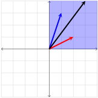
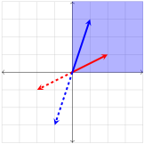
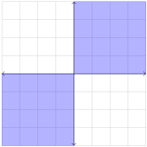
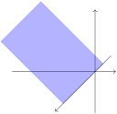
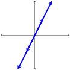

Section 4.1 Introduction to Vector Spaces
We are familiar with two operations that can be applied to vectors in
\(\R^n\text{,}\) namely, addition of vectors and scalar multiplication. We learned that addition and scalar multiplication satisfy many nice properties (see
Theorem 2.1.22). These properties give
\(\R^n\) an algebraic structure.
We begin this section by introducing another property, called closure. Adding closure to the properties we studied earlier allows us to show that \(\R^n\) satisfies all of the properties of a vector space, which we will formally define in this section.
Subsection 4.1.1 Closure
Definition 4.1.1.
A set \(V\) is said to be closed under addition if for each element \(\mathbf{u} \in V\) and \(\mathbf{v} \in V\) the sum \(\mathbf{u}+\mathbf{v}\) is also in \(V\text{.}\)
Definition 4.1.2.
A set \(V\) is said to be closed under scalar multiplication if for each element \(\mathbf{v} \in V\) and for each scalar \(k \in \R\) the product \(k\mathbf{v}\) is also in \(V\text{.}\)
A few examples to warm up to the concepts will be given.
Example 4.1.3.
Let \(E\) be the set of positive even integers. Then \(E\) is closed under addition, because the sum of two even integers is again an even integer.
Example 4.1.4.
Let \(D\) be the set of positive odd integers. Then \(D\) is not closed under addition, for the sum of two odd integers need not be an odd integer (in fact, it will always be even).
Example 4.1.5.
Let \(X_1\) be defined as the set of vectors in \(\mathbb{R}^2\) in the first quadrant (or on an axis on the boundary of the first quadrant). Written in symbols:
\begin{equation*}
X_1=\left\{\begin{bmatrix} x_1\\x_2\end{bmatrix} \in \mathbb{R}^2 : x_1 \ge 0, \ x_2 \ge 0 \right\}
\end{equation*}
Show that \(X_1\) is closed under addition, but \(X_1\) is not closed under scalar multiplication.
Answer.
Suppose \(\mathbf{v}_1=[a,b]\) and \(\mathbf{v}_2=[c,d]\) are in \(X_1\text{.}\) This means that \(a, b, c, d\geq 0\text{.}\) But then we have \(a+c, b+d\geq 0\text{.}\) Therefore
\begin{equation*}
\mathbf{v}_1+\mathbf{v}_2=\begin{bmatrix}a+c\\b+d\end{bmatrix}
\end{equation*}
is also in \(X_1\text{.}\) We conclude that \(X_1\) is closed under addition. \(X_1\) is not closed under scalar multiplication because
\begin{equation*}
(-1)\mathbf{v}_1=\begin{bmatrix}-a\\-b\end{bmatrix}
\end{equation*}
is not in \(X_1\text{.}\)The figure below helps us see that the sum of any two vectors in \(X_1\) also lies in \(X_1\text{.}\)

The next picture pictures how negative multiples of a vector does not list in \(X_1\text{.}\)

Example 4.1.6.
\begin{equation*}
X_3=\left\{\begin{bmatrix} x_1\\x_2\end{bmatrix} \in \mathbb{R}^2 : x_1 \le 0, \ x_2 \le 0 \right\}
\end{equation*}
In other words, \(X_3\) is the set of vectors in \(\R^2\) in the third quadrant (or on an axis on the boundary of the third quadrant). Let \(Y\) consist of \(X_1\) and \(X_3\) combined. In other words, \(Y\) is the set of vectors in \(\R^2\) that are either in the first quadrant, the third quadrant, or lie along one of the axes, as shown below.

Then \(Y\) is closed under scalar multiplication, but \(Y\) is not closed under addition.
Subsection 4.1.2 Properties of Vector Spaces
So, we have now seen that \(\R^n\) is
closed under vector addition (why?),
closed under scalar multiplication (why?),
and satisfies the following properties:
Commutative Property of Addition: \(\mathbf{u}+\mathbf{v}=\mathbf{v}+\mathbf{u}.\)
Associative Property of Addition: \((\mathbf{u}+\mathbf{v})+\mathbf{w}=\mathbf{u}+(\mathbf{v}+\mathbf{w}).\)
Existence of Additive Identity: \(\mathbf{u}+\mathbf{0}=\mathbf{u}.\)
Existence of Additive Inverse: \(\mathbf{u}+(-\mathbf{u})=\mathbf{0}.\)
Distributive Property over Vector Addition: \(k(\mathbf{u}+\mathbf{v})=k\mathbf{u}+k\mathbf{v}.\)
Distributive Property over Scalar Addition: \((k+p)\mathbf{u}=k\mathbf{u}+p\mathbf{u}.\)
Associative Property for Scalar Multiplication: \(k(p\mathbf{u})=(kp)\mathbf{u}.\)
Multiplication by \(1\text{:}\) \(1\mathbf{u}=\mathbf{u}.\)
In the next two examples we will explore two sets other than \(\R^n\) endowed with addition and scalar multiplication and satisfying the same properties.
Example 4.1.8.
Let \(\mathbb{M}_{m,n}\) be the set of all \(m\times n\) matrices. Matrix addition and scalar multiplication were defined in chapter \(4\text{.}\) Observe that the sum of two \(m\times n\) matrices is also an \(m\times n\) matrix. Likewise, a scalar multiple of an \(m\times n\) matrix is an \(m\times n\) matrix. Thus
\(\mathbb{M}_{m,n}\) is closed under matrix addition;
\(\mathbb{M}_{m,n}\) is closed under scalar multiplication.
In addition,
Theorem 3.1.5 and
Theorem 3.1.8 give us the following properties of matrix addition and scalar multiplication. Note that these properties are analogous to the eight vector properties above.
Commutative Property of Addition: \(\quad A+B=B+A\text{.}\)
Associative Property of Addition: \(\quad (A+B)+C=A+(B+C)\text{.}\)
Existence of Additive Identity: \(\quad A+O=A \ \) where \(O\) is the \(m \times n\) zero matrix.
Existence of Additive Inverse: \(\quad A+(-A)=O\text{.}\)
Distributive Property over Matrix Addition: \(\quad k(A+B)=kA+kB\text{.}\)
Distributive Property over Scalar Addition: \(\quad (k+p)A=kA+pA\text{.}\)
Associative Property for Scalar Multiplication: \(\quad k(pA)=(kp)A\text{.}\)
Multiplication by \(1\text{:}\) \(\quad 1A=A\text{.}\)
Example 4.1.9.
Consider the set \(\mathbb{L}\) of all linear functions. This set includes all polynomials of degree \(1\) and degree \(0\text{.}\) We will use addition and scalar multiplication of polynomials as the two operations, and show that \(\mathbb{L}\) is closed under those operations and satisfies eight properties analogous to those of vectors of \(\R^n\text{.}\)
Answer.
Elements of \(\mathbb{L}\) are functions \(f\) given by
\begin{equation*}
f(x)=mx+b.
\end{equation*}
(Note that \(m\) and \(b\) can be equal to zero.)
Given \(f_1\) and \(f_2\) in \(\mathbb{L}\text{,}\) it is easy to verify that \(f_1+f_2\) is also in \(\mathbb{L}\text{.}\) This gives us closure under function addition. For any scalar \(k\text{,}\) we have
\begin{equation*}
kf(x)=k(mx+b)=(km)x+(kb).
\end{equation*}
Therefore \(kf\) is in \(\mathbb{L}\text{,}\) and \(\mathbb{L}\) is closed under scalar multiplication. We now proceed to formulate eight properties analogous to those of vectors of \(\R^n\text{.}\)
Let \(f_1\text{,}\) \(f_2\) and \(f_3\) be elements of \(\mathbb{L}\) given by \(f_1(x)=m_1 x + b_1\text{,}\) \(f_2(x)=m_2 x + b_2\text{,}\) and \(f_3(x)=m_3 x + b_3\text{.}\) Let \(k\) and \(p\) be scalars.
-
Commutative Property of Addition: \(f_1+f_2=f_2+f_1.\)
This property holds because
\begin{align*}
f_1(x) + f_2(x) \amp = (m_1 x + b_1) + (m_2 x + b_2) \\
\amp = (m_2 x + b_2) + (m_1 x + b_1) \\
\amp = f_2(x) + f_1(x).
\end{align*}
-
Associative property of Addition:
\begin{equation*}
(f_1 + f_2) + f_3 = f_1 + (f_2 + f_3).
\end{equation*}
This property is easy to verify and is left to the reader.
-
Existence of additive identity:
\begin{equation*}
f_1 + f_0 = f_1
\end{equation*}
The additive identity \(f_0\) is given by \(f_0(x)=0\text{.}\) Note that \(f_0\) is a vector in the space \(\mathbb{L}\text{.}\)
-
Existence of additive inverse:
\begin{equation*}
f_1 + (-f_1) = f_0.
\end{equation*}
The additive inverse of \(f_1\) is a function \(-f_1\) given by \(-f_1(x)=-mx+(-b)\text{.}\) Note that \(-f_1\) is in \(\mathbb{L}\text{.}\)
-
Distributive Property over Vector Addition:
\begin{equation*}
k(f_1+f_2)=kf_1+kf_2.
\end{equation*}
This property holds because
\begin{align*}
k(f_1(x) + f_2(x)) \amp = k((m_1 x + b_1) + (m_2 x + b_2)) \\
\amp = k(m_1 x + b_1) + k(m_2 x + b_2) \\
\amp = k f_1(x) + k f_2(x).
\end{align*}
-
Distributive property over scalar addition:
\begin{equation*}
(k+p)f_1=kf_1+pf_1.
\end{equation*}
This property holds because
\begin{align*}
(k+p)f_1(x)\amp = (k+p)(m_1 x + b_1) \\
\amp =k(m_1 x + b_1) + p(m_1 x + b_1) \\
\amp = k f_1(x) + p f_1(x).
\end{align*}
-
Associative property for scalar multiplication: \((k(pf_1))=(kp)f_1.\)
This property holds because
\begin{align*}
k(p(f_1(x)))\amp =k(p(m_1 x + b_1)) \\
\amp =k(p m_1 x +p b_1) \\
\amp =kp m_1 x +kp b_1 \\
\amp = (kp) m_1 x + (kp) b_1 \\
\amp = (kp)(m_1 x + b_1) \\
\amp =(kp)f_1(x).
\end{align*}
-
Multiplication by \(1\)
This follows from
\begin{equation*}
1 f_1=f_1.
\end{equation*}
Subsection 4.1.3 Definition of a Vector Space
During
Example 4.1.8 and
Example 4.1.9 show us that there are many times in mathematics when we encounter a set with two operations (that we call addition and scalar multiplication) such that the set is closed under the two operations, and satisfies the same eight properties as
\(\R^n\text{.}\) We will refer to such sets as
vector spaces.
Definition 4.1.10.
Let \(V\) be a nonempty set. Suppose that elements of \(V\) can be added together and multiplied by scalars. The set \(V\text{,}\) together with operations of addition and scalar multiplication, is called a vector space provided that
and the following properties hold for \(\mathbf{u}\text{,}\) \(\mathbf{v}\) and \(\mathbf{w}\) in \(V\) and scalars \(k\) and \(p\text{:}\)
Commutative Property of Addition: \(\mathbf{u}+\mathbf{v}=\mathbf{v}+\mathbf{u}.\)
Associative Property of Addition:\quad \((\mathbf{u}+\mathbf{v})+\mathbf{w}=\mathbf{u}+(\mathbf{v}+\mathbf{w}).\)
Existence of Additive Identity: \(\mathbf{u}+\mathbf{0}=\mathbf{u}.\)
Existence of Additive Inverse: \(\mathbf{u}+(-\mathbf{u})=\mathbf{0}.\)
Distributive Property over Vector Addition: \(k(\mathbf{u}+\mathbf{v})=k\mathbf{u}+k\mathbf{v}.\)
Distributive Property over Scalar Addition: \((k+p)\mathbf{u}=k\mathbf{u}+p\mathbf{u}.\)
Associative Property for Scalar Multiplication: \(k(p\mathbf{u})=(kp)\mathbf{u}.\)
Multiplication by \(1\text{:}\) \(1\mathbf{u}=\mathbf{u}.\)
We will refer to elements of \(V\) as vectors.
When scalars \(k\) and \(p\) in the above definition are restricted to real numbers, as they are in this chapter, vector space \(V\) may be referred to as a vector space over the real numbers.
We have already encountered two abstract vectors spaces before, viz.:
Example 4.1.11.
Sets of polynomials provide an important source of examples, so we review some basic facts. A polynomial with real coefficients in \(x\) is an expression
\begin{equation*}
p(x) = a_0 + a_1x + a_2x^2 + \ldots + a_nx^n
\end{equation*}
where \(a_{0}, a_{1}, a_{2}, \ldots, a_{n}\) are real numbers called the coefficients of the polynomial.
If all the coefficients are zero, the polynomial is called the zero polynomial and is denoted simply as \(0\text{.}\)
If \(p(x) \neq 0\text{,}\) the highest power of \(x\) with a nonzero coefficient is called the degree of \(p(x)\) denoted as \(\mbox{deg}(p(x))\text{.}\) The degree of the zero polynomial is not defined.
The coefficient itself is called the leading coefficient of \(p(x)\text{.}\) Hence \(\mbox{deg}(3 + 5x) = 1\text{,}\) \(\mbox{deg}(1 + x + x^{2}) = 2\text{,}\) and \(\mbox{deg}(4) = 0\text{.}\)
Let \(\mathbb{P}\) denote the set of all polynomials and suppose that
\begin{align*}
p(x) \amp = a_0 + a_1x + a_2x^2 + \ldots \\
q(x) \amp = b_0 + b_1x + b_2x^2 + \ldots
\end{align*}
are two polynomials in \(\mathbb{P}\) (possibly of different degrees). Then \(p(x)\) and \(q(x)\) are called equal (written \(p(x) = q(x)\)) if and only if all the corresponding coefficients are equal--- that is, one has \(a_{0} = b_{0}\text{,}\) \(a_{1} = b_{1}\text{,}\) \(a_{2} = b_{2}\text{,}\) and so on. In particular, \(a_{0} + a_{1}x + a_{2}x^{2} + \ldots = 0\) means \(a_{0} = 0\text{,}\) \(a_{1} = 0\text{,}\) \(a_{2} = 0\text{,}\) \(\ldots\text{.}\)
The set \(\mathbb{P}\) has an addition and scalar multiplication defined on it as follows: if \(p(x)\) and \(q(x)\) are as before and \(k\) is a real number,
\begin{align*}
p(x) + q(x) \amp = (a_0 + b_0) + (a_1 + b_1)x + (a_2 + b_2)x^2 + \ldots \\
kp(x) \amp = ka_0 + (ka_1)x + (ka_2)x^2 + \ldots
\end{align*}
A ton of terminology was just introduced. They are underlined in the example below.
Example 4.1.12.
\(\mathbb{P}\) is a vector space.
Answer.
It is easy to see that the sum of two polynomials is again a polynomial, and that a scalar multiple of a polynomial is a polynomial. Thus, \(\mathbb{P}\) is closed under addition and scalar multiplication. The other eight vector space properties are easily verified, and we conclude that \(\mathbb{P}\) is a vector space.
Example 4.1.13.
Let \(Y\) be the set of all degree two polynomials in \(x\text{.}\) In other words,
\begin{equation*}
Y=\left \lbrace ax^2+bx+c : a \ne 0 \right \rbrace.
\end{equation*}
We claim that \(Y\) is not a vector space.
Answer.
Observe that \(Y\) is not closed under addition. To see this, let \(y_1 = 2x^2+3x+4\) and let \(y_2=-2x^2\text{.}\) Then \(y_1\) and \(y_2\) are both elements of \(Y\text{.}\) However, \(y_1+y_2 = 3x+4\) is not an element of \(Y\text{,}\) as it is only a degree one polynomial. We require the coefficient \(a\) of \(x^2\) to be nonzero for a polynomial to be in \(Y\text{,}\) and this is not the case for \(y_1+y_2\text{.}\) As an exercise, check the remaining vector space properties one-by-one to see which properties hold and which do not.
Set
\(Y\) in
Example 4.1.13 is not a vector space, but if we make a slight modification, we can make it into a vector space.
Example 4.1.14.
Let \(\mathbb{P}^2\) be the set of polynomials of degree two or less. In other words,
\begin{equation*}
\mathbb{P}^2=\left \lbrace ax^2+bx+c : a,b,c \in \mathbb{R} \right \rbrace.
\end{equation*}
Note that
\(\mathbb{P}^2\) contains the zero polynomial (let
\(a=b=c=0\)). Unlike set
\(Y\) in
Example 4.1.13,
\(\mathbb{P}^2\) is closed under polynomial addition and scalar multiplication. It is easy to verify that all vector space properties hold, so
\(\mathbb{P}^2\) is a vector space.
Example 4.1.15.
Let
\(n\) be a natural number. Define
\(\mathbb{P}^n\) to be the set of polynomials of degree
\(n\) or less than
\(n\text{,}\) then by reasoning similar to
Example 4.1.14,
\(\mathbb{P}^n\) is a vector space.
Subsection 4.1.4 Subspaces
Definition 4.1.16.
A nonempty subset \(U\) of a vector space \(V\) is called a subspace of \(V\text{,}\) provided that \(U\) is itself a vector space when given the same addition and scalar multiplication as \(V\text{.}\)
An example to showcase this is in order.
Example 4.1.17.
In
Example 4.1.14 we demonstrated that
\(\mathbb{P}^2\) is a vector space. From
Example 4.1.12 we know that
\(\mathbb{P}\) is a vector space. But
\(\mathbb{P}^2\) is a subset of
\(\mathbb{P}\text{,}\) and uses the same operations of polynomial addition and scalar multiplication. Therefore
\(\mathbb{P}^2\) is a subspace of
\(\mathbb{P}\text{.}\)
Checking all ten properties to verify that a subset of a vector space is a subspace can be cumbersome. Fortunately we have the following theorem.
Theorem 4.1.18. Subspace Test.
Let \(U\) be a nonempty subset of a vector space \(V\text{.}\) If \(U\) is closed under the operations of addition and scalar multiplication of \(V\text{,}\) then \(U\) is a subspace of \(V\text{.}\)
Proof.
To prove that closure is a sufficient condition for \(U\) to be a subspace, we will need to show that closure under addition and scalar multiplication of \(V\) guarantees that the remaining eight properties are satisfied automatically.
Observe that
Item 1,
Item 2,
Item 5,
Item 6,
Item 7 and
Item 8 hold for all elements of
\(V\text{.}\) Thus, these properties will hold for all elements of
\(U\text{.}\) We say that these properties are
inherited from
\(V\text{.}\)
To prove
Item 3 we need to show that
\(\mathbf{0}\text{,}\) which we know to be an element of
\(V\text{,}\) is contained in
\(U\text{.}\) Let
\(\mathbf{u}\) be an element of
\(U\) (recall that
\(U\) is nonempty). We will show that
\(0\mathbf{u}=\mathbf{0}\) in
\(V\text{.}\) Then, by closure under scalar multiplication, we will be able to conclude that
\(0\mathbf{u}=\mathbf{0}\) must be in
\(U\text{.}\)
\begin{equation*}
0\mathbf{u}=(0+0)\mathbf{u}=0\mathbf{u}+0\mathbf{u}.
\end{equation*}
Adding the additive inverse of \(0\mathbf{u}\) to both sides gives us
\begin{equation*}
0\mathbf{u}+(-0\mathbf{u})=(0\mathbf{u}+0\mathbf{u})+(-0\mathbf{u}).
\end{equation*}
\begin{equation*}
\mathbf{0}=0\mathbf{u}+(0\mathbf{u}+(-0\mathbf{u})).
\end{equation*}
\begin{equation*}
\mathbf{0}=0\mathbf{u}+\mathbf{0}=0\mathbf{u}.
\end{equation*}
Because \(U\) is closed under scalar multiplication \(0\mathbf{u}=\mathbf{0}\) is in \(U\text{.}\) We know that every element of \(U\text{,}\) being an element of \(V\text{,}\) has an additive inverse in \(V\text{.}\) We need to show that the additive inverse of every element of \(U\) is contained in \(U\text{.}\) Let \(\mathbf{u}\) be any element of \(U\text{.}\) We will show that \((-1)\mathbf{u}\) is the additive inverse of \(\mathbf{u}\text{.}\) Then by closure, \((-1)\mathbf{u}\) will have to be contained in \(U\text{.}\) To show that \((-1)\mathbf{u}\) is the additive inverse of \(\mathbf{u}\text{,}\) we must show that \(\mathbf{u}+(-1)\mathbf{u}=\mathbf{0}\text{.}\) We compute:
\begin{equation*}
\mathbf{u}+(-1)\mathbf{u}=1\mathbf{u}+(-1)\mathbf{u}=(1+(-1))\mathbf{u}=0\mathbf{u}=\mathbf{0}.
\end{equation*}
Thus \((-1)\mathbf{u}\) is the additive inverse of \(\mathbf{u}\text{.}\) By closure, \((-1)\mathbf{u}\) is in \(U\text{.}\)
Let us activate the theorem in a couple of examples.
Example 4.1.19.
Let \(V\) be the set of vectors in \(\R^3\) on the \(y-\)axis. Then \(V\) is a subspace of \(\R^3\text{.}\)
Answer.
To verify this, note that any vector in \(V\) is of the form
\begin{equation*}
\begin{bmatrix}0\\y\\0 \end{bmatrix}\text{.}
\end{equation*}
If we multiply such a vector by a scalar \(c\text{,}\) we get a vector of the form
\begin{equation*}
\begin{bmatrix}0\\cy\\0 \end{bmatrix},
\end{equation*}
which is clearly still in \(V\text{.}\) This proves \(V\) is closed under scalar multiplication. Next, note that
\begin{equation*}
\begin{bmatrix}0\\y_1\\0 \end{bmatrix} + \begin{bmatrix}0\\y_2\\0 \end{bmatrix}= \begin{bmatrix}0\\y_1 + y_2\\0\end{bmatrix},
\end{equation*}
so \(V\) is closed under addition.
Example 4.1.20.
Let \(A\) be a fixed matrix in \(\mathbb{M}_{n,n}\text{.}\) Show that the set \(C_A\) of all \(n\times n\) matrices that commute with \(A\) under matrix multiplication is a subspace of \(\mathbb{M}_{n,n}\text{.}\)
Answer.
The set \(C_A\) consists of all \(n\times n\) matrices \(X\) such that \(AX=XA\text{.}\) First, observe that \(C_A\) is not empty because \(I_n\) is an element. Now we need to show that \(C_A\) is closed under matrix addition and scalar multiplication. Suppose that \(X_1\) and \(X_{2}\) lie in \(C_A\text{.}\) Then \(AX_1 = X_1A\) and \(AX_{2} = X_{2}A\text{.}\) Then
\begin{equation*}
A(X_1 + X_2) = AX_1 + AX_2 = X_1A + X_2A + (X_1 + X_2)A.
\end{equation*}
Therefore \((X_1+X_2)\) commutes with \(A\text{.}\) Thus \((X_1+X_2)\) is in \(C_A\text{.}\) We conclude that \(C_A\) is closed under matrix addition. Now suppose \(X\) is in \(C_A\text{.}\) Let \(k\) be a scalar, then
\begin{equation*}
A(kX)= k(AX) = k(XA) = (kX)A.
\end{equation*}
Therefore \((kX)\) commutes with \(A\text{.}\) We conclude that \((kX)\) is in \(C_A\text{,}\) and \(C_A\) is closed under scalar multiplication. Hence \(C_A\) is a subspace of \(\mathbb{M}_{n,n}\text{.}\)
To get used to the new terminology, let us look at an example in the context of polynomials.
Example 4.1.22.
Consider the set \(U\) of all polynomials in \(\mathbb{P}\) that have \(3\) as a root:
\begin{equation*}
U = \lbrace p(x) \in \mathbb{P} : p(3) = 0 \rbrace.
\end{equation*}
Show that \(U\) is a subspace of \(\mathbb{P}\text{.}\)
Answer.
Observe that \(U\) is not empty because \(r(x)=x-3\) is an element of \(U\text{.}\) Suppose \(p(x)\) and \(q(x)\) lie in \(U\text{.}\) Then \(p(3) = 0\) and \(q(3) = 0\text{.}\) We have
\begin{equation*}
(p + q)(x) = p(x) + q(x)
\end{equation*}
for all \(x\text{,}\) so
\begin{equation*}
(p + q)(3) = p(3) + q(3) = 0 + 0 = 0,
\end{equation*}
and \(U\) is closed under addition. The verification that \(U\) is closed under scalar multiplication is similar.
The following important results provides us with a quick ways to determine that some subsets are not subspaces.
Theorem 4.1.23.
If \(W\) is a subspace of a vector space \(V\text{,}\) then the zero vector \(\mathbf{0}\) is in \(W\text{.}\)
Proof.
Take any vector \(\mathbf{w}\) in \(W\text{,}\) and note that \(0 \mathbf{w} = \mathbf{0}\) is in \(W\) because \(W\) is closed under scalar multiplication.
Consider lines in
\(\R^n\text{.}\) Applying
Theorem 4.1.23 shows that the only lines in
\(\R^n\) that are subspaces are those that pass through the origin. The same holds true for planes and hyperplanes. For example, the plane
\(z=3\) in
\(\R^3\) is not a subspace of
\(\R^3\text{,}\) while any plane containing the origin is a subspace.
Theorem 4.1.24.
If \(W\) is a subspace of a vector space \(V\text{,}\) then for any vector \(\mathbf{w} \in W\text{,}\) the additive inverse, \(-\mathbf{w}\text{,}\) is also in \(W\text{.}\)
The proof is similar to what was done for the previous theorem and is left as an exercise.
Subsection 4.1.5 Linear Combinations and Span
Just as we have seen in
Section 2.2, the concepts of linear combinations and span are fundamental in understanding the structure of vector spaces. These concepts will be used extensively in the next section and in the rest of the text.
Definition 4.1.25.
Let \(V\) be a vector space and let \(\mathbf{v}_1, \mathbf{v}_2,\ldots ,\mathbf{v}_n\) be vectors in \(V\text{.}\) A vector \(\mathbf{v}\) is said to be a linear combination of vectors \(\mathbf{v}_1, \mathbf{v}_2,\ldots, \mathbf{v}_n\) if
\begin{equation*}
\mathbf{v}=a_1\mathbf{v}_1+ a_2\mathbf{v}_2+\ldots + a_n\mathbf{v}_n,
\end{equation*}
for some scalars \(a_1, a_2, \ldots ,a_n\text{.}\)
Definition 4.1.26.
Let \(V\) be a vector space and let \(\mathbf{v}_1, \mathbf{v}_2,\ldots ,\mathbf{v}_p\) be vectors in \(V\text{.}\) The set \(S\) of all linear combinations of
\begin{equation*}
\mathbf{v}_1, \mathbf{v}_2,\ldots ,\mathbf{v}_p
\end{equation*}
is called the span of \(\mathbf{v}_1, \mathbf{v}_2,\ldots ,\mathbf{v}_p\text{.}\) We write
\begin{equation*}
S=\mbox{span}(\mathbf{v}_1, \mathbf{v}_2,\ldots ,\mathbf{v}_p)
\end{equation*}
and we say that vectors \(\mathbf{v}_1, \mathbf{v}_2,\ldots ,\mathbf{v}_p\) span \(S\text{.}\) Any vector in \(S\) is said to be in the span of \(\mathbf{v}_1, \mathbf{v}_2,\ldots ,\mathbf{v}_p\text{.}\) The set
\begin{equation*}
\{\mathbf{v}_1, \mathbf{v}_2,\ldots ,\mathbf{v}_p\}
\end{equation*}
is called a spanning set for \(S\text{.}\)
We revisit the situation for some specific polynomials.
Example 4.1.27.
Consider \(p_{1} = 1 + x + 4x^{2}\) and \(p_{2} = 1 + 5x + x^{2}\) in \(\mathbb{P}^{2}\text{.}\) Determine whether \(p_{1}\) and \(p_{2}\) lie in
\begin{equation*}
\mbox{span}\{1 + 2x - x^{2}, 3 + 5x + 2x^{2}\}.
\end{equation*}
Answer.
For \(p_{1}\text{,}\) we want to determine if \(a\) and \(b\) exist such that
\begin{equation*}
p_1 = a(1 + 2x - x^2) + b(3 + 5x + 2x^2).
\end{equation*}
Expanding the right hand side gives us:
\begin{equation*}
a+2ax-ax^2+3b+5bx+2bx^2.
\end{equation*}
Combining like terms, we get:
\begin{equation*}
(a+3b)+(2a+5b)x+(-a+2b)x^2.
\end{equation*}
Setting this equal to \(p_{1} = 1 + x + 4x^{2}\) and equating coefficients of powers of \(x\) gives us a system of equations
\begin{equation*}
1 = a + 3b,\quad 1 = 2a + 5b, \quad \mbox{ and } \quad 4 = -a + 2b.
\end{equation*}
This system has the solution \(a = -2\) and \(b = 1\text{,}\) so \(p_{1}\) is indeed in \(\mbox{span}\{1 + 2x - x^{2}, 3 + 5x + 2x^{2}\}\text{.}\) Turning to \(p_{2} = 1 + 5x + x^{2}\text{,}\) we are looking for \(a\) and \(b\) such that
\begin{equation*}
p_{2} = a(1 + 2x - x^{2}) + b(3 + 5x + 2x^{2}).
\end{equation*}
Again equating coefficients of powers of \(x\) gives equations \(1 = a + 3b\text{,}\) \(5 = 2a + 5b\text{,}\) and \(1 = -a + 2b\text{.}\) But in this case there is no solution, so \(p_{2}\) is not in \(\mbox{span}\{1 + 2x - x^{2}, 3 + 5x + 2x^{2}\}\text{.}\)
Theorem 4.1.28.
Let \(V\) be a vector space. Let \(S\) be any subset of \(V\text{.}\) Then \(U=\mbox{span}(S)\) is a subspace of \(V\text{.}\)
Proof.
The theorem above is very useful, as it allows us to conclude that the span of any set of vectors is a subspace of the vector space in which the vectors lie. This is a powerful tool in linear algebra. We can work with spans without having to verify all the properties of a subspace individually.
Example 4.1.29.
Verify that every line, plane, and hyperplane through the origin in \(\R^n\) is a subspace of \(\R^n\text{.}\)
Answer.
This is a direct consequence of
Theorem 4.1.28. For example, consider the line through the origin in
\(\R^3\) spanned by the vector
\(\mathbf{v} = [1,2,3]\text{.}\) The span of this vector is the set of all scalar multiples of
\(\mathbf{v}\text{,}\) which is a subspace of
\(\R^3\text{.}\) Similarly, any plane or hyperplane through the origin can be expressed as the span of two or more vectors, respectively, and thus is also a subspace.
Exercises 4.1.6 Exercises
Exercise Group.
Let \(Y^+\) be the set of all vectors \([x,y]\) in \(\mathbb{R}^2\) whose \(y\) components are non-negative.
1.
Is \(Y^+\) closed under vector addition?
2.
Is \(Y^+\) closed under scalar multiplication?
Exercise Group.
Let \(X\) be the set of all vectors in \(\R^3\) that lie on either the \(x\)-axis, the \(y\)-axis, or the \(z\)-axis.
3.
Is \(X\) closed under vector addition?
4.
Is \(X\) closed under scalar multiplication?
Exercise Group.
For each figure below, determine whether the set \(V\) of vectors shown in the figure is closed under vector addition and scalar multiplication. Justify your responses.
5.
\(V\) consists of all vectors in \(\mathbb{R}^3\) in a slanted half-plane which has the \(x\)-axis as a boundary.

Is \(V\) closed under scalar multiplication? What about addition?
Answer.
It is closed under addition but not under scalar multiplication.
6.
\(V\) consists of all vectors along the line, as shown.

Is \(V\) closed under scalar multiplication? What about addition?
Answer.
It is closed under both addition and scalar multiplication.
Exercise Group.
Is the set of all points in \(\mathbb{R}^2\) a vector space under the given definitions of addition and scalar multiplication? In each case be specific about which vector space properties hold and which properties fail.
7.
Addition:
\begin{equation*}
(a, b)+(c, d)=(a+d, b+c)
\end{equation*}
and scalar Multiplication:
\begin{equation*}
k(a, b)=(ka, kb).
\end{equation*}
8.
Addition:
\begin{equation*}
(a, b)+(c, d)=(0, b+d)
\end{equation*}
and scalar Multiplication:
\begin{equation*}
k(a, b)=(ka, kb).
\end{equation*}
9.
Addition:
\begin{equation*}
(a, b)+(c, d)=(a+c, b+d)
\end{equation*}
and scalar Multiplication:
\begin{equation*}
k(a, b)=(a, kb).
\end{equation*}
10.
Addition:
\begin{equation*}
(a, b)+(c, d)=(a-c, b-d)
\end{equation*}
and scalar Multiplication:
\begin{equation*}
k(a, b)=(ka, kb).
\end{equation*}
11.
Let \(\mathcal{F}\) be the set of all real-valued functions whose domain is all real numbers. Define addition and scalar multiplication as follows:
\begin{equation*}
(f+g)(x)=f(x)+g(x)\quad (cf)(x)=cf(x).
\end{equation*}
Verify that \(\mathcal{F}\) is a vector space.
12.
A differential equation is an equation that contains derivatives. Consider the differential equation:
\begin{equation}
f''+f=0.\tag{4.1.1}
\end{equation}
A solution to such an equation is a function.
Verify that
\(f(x)=\sin x\) is a solution to
(4.1.1).
Is \(f(x)=2\sin x\) a solution?
Is \(f(x)=\cos x\) a solution?
Is \(f(x)=\sin x+\cos x\) a solution?
Let
\(S\) be the set of all solutions to
(4.1.1). Prove that
\(S\) is a vector space.
13.
In this problem we will check that the set \(\mathbb{C}\) of all complex numbers is in fact a vector space. Let \(z_1 = a_1 + b_1 i\) be a complex number. Similarly, let \(z_2 = a_2 + b_2 i\text{,}\) \(z_3 = a_3 + b_3 i\) be complex numbers, and let \(k\) and \(p\) be real number scalars. Check that complex numbers are closed under addition and multiplication, and that they satisfy each of the vector space properties.
14.
15.
Let \(A\) be an \(m \times n\) matrix. Let \(V\) be the subset of \(\R^n\) consisting of all vectors \(\mathbf{x}\) such that \(A \mathbf{x} = \mathbf{0}\text{.}\) Prove that \(V\) is a subspace of \(\R^n\text{.}\) (Note that this subspace is called the null space of the matrix \(A\) and we will denote it \(\mbox{null}(A)\text{.}\))
16.
Refer to
Example 4.1.20 and describe all elements of
\(C_I\text{,}\) where
\(I\) is a
\(3\times 3\) identity matrix.
17.
Is the subset of all invertible \(n\times n\) matrices a subspace of \(\mathbb{M}_{n,n}\text{?}\) Prove your claim.
18.
Is the subset of all symmetric
\(n\times n\) matrices a subspace of
\(\mathbb{M}_{n,n}\text{?}\) (eee
Definition 3.1.24.) Prove your claim.
19.
Let \(Z\) be a subset of \(\mathbb{M}_{n,n}\) that consists of \(n\times n\) matrices that commute with every matrix in \(\mathbb{M}_{n,n}\) under matrix multiplication. In other words,
\begin{equation*}
Z= \lbrace B : BY=YB \mbox{ for all } Y \in \mathbb{M}_{n,n} \rbrace.
\end{equation*}
Is \(Z\) a subspace of \(\mathbb{M}_{n,n}\text{?}\)
Hint.
Don’t forget to check that \(Z\) is not empty!
20.
List several elements of
\begin{equation*}
\mbox{span}\left(\begin{bmatrix}1\amp 0\\0\amp 1\end{bmatrix}, \begin{bmatrix}0\amp 1\\1\amp 0\end{bmatrix}\right).
\end{equation*}
Suggest a spanning set for \(\mathbb{M}_{2,2}\text{.}\)
21.
Describe how every element of \(\mbox{span}(1, x, x^2, x^3)\) looks like.
22.